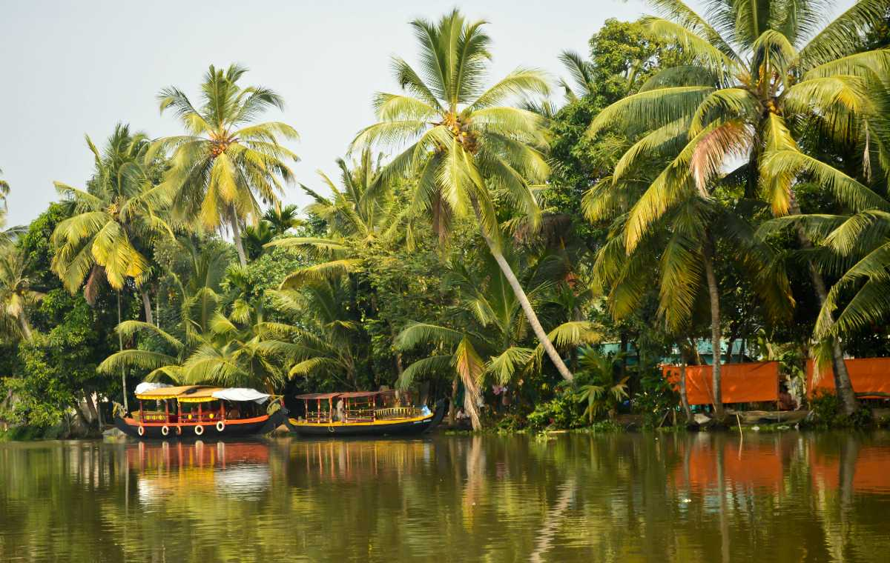
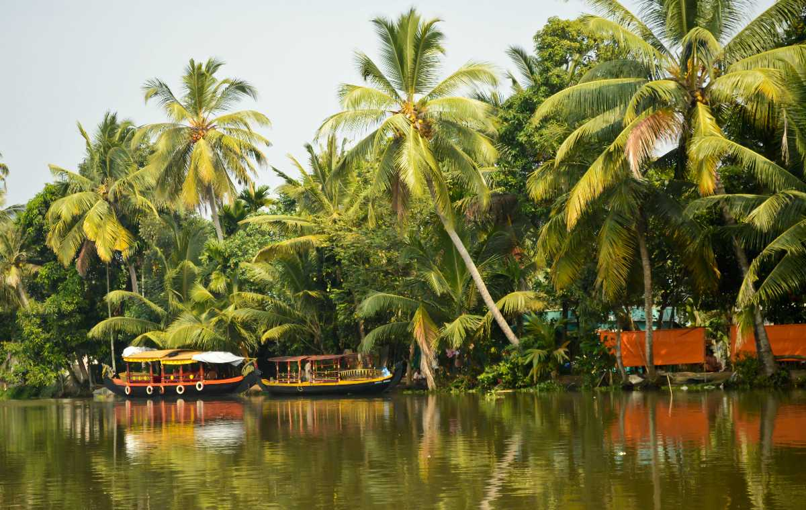

MAIN ATTRACTIONS
Backwaters in Kozhikode
Spread across long stretches of the Arabian water, these beguiling backwater lagoons are a sight to withhold. However, they are well known for its cruises on houseboats which offer an enthralling experience.
 



Beypore
Beypore , an ancient port town in Kozhikode formerly called as Vaypura / Vadaparappanad. The famous ruler of Mysore , Tipu Sultan, named the town "Sultan Pattanam".Beypore port was historically famous for trading with the Middle East. It is one of the oldest ports in Kerala. (br) The place is also popular for building wooden ships, called as dhows in Malyalam, usually bought by Arab merchants for trading purposes
Kakkayam
Its a dam site located in Kozhikode of Kerala state surrounded by lush greenery .The distance is about 15 km from Kakkayam Bus stop. There is a forest office at top . You need to take permission from the official authories before going ahead. Cameras are not allowed near Dam area. 'Orakkuzhi' is a water fall located just after the Dam. Near the dam location , different animals including elephants can be seen.


Sweet street
A popular hub to gorge on sweet delectables, the Sweet Street is one of the busiest place to shop in Kozhikode. It remains open till 9 in the night.
Mananchira square
Fed by a natural shower, Mananchira is a man-made freshwater pond surrounding which is the astounded complex, Mananchira Square. The pond was built in around 14th century as a bathing pool by the feudal ruler of Kozhikode, Zamorin Mana Vikrama whereas the Mananchira Square was opened in 1994.